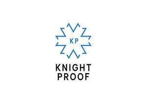

Trade Mark Journal No.2025/024 13 June 2025
UK00004206296 20 May 2025 (9,35,38,41,42)

- Class 9
- Computer software; Games software; Downloadable electronic game programs; Computer software and programs for social gaming (excluding gambling for money or money equivalent), social wagering, operation of social games, games of chance, games of skill, and games of mixed chance and skill, and for providing virtual environments in which users can interact for social, gaming or social wagering purposes, all of the foregoing for use on personal computers, on home, arcade, and casino computers, gaming consoles and video terminals, and on wireless communication devices.
- Class 35
- Advertising and marketing services provided by means of social media; Advertising; Administration of contests for advertising purposes; Promoting the sale of goods and service of others by means of contests and incentive award programs; Exhibitions (Conducting -) for business purposes; Exhibitions (Arranging -) for advertising purposes; Advertising and marketing of gaming and gambling services.
- Class 38
- Providing access to gambling and gaming websites on the internet; Providing online forums for communication in the field of electronic games.
- Class 41
- Online gaming services; Gaming machine entertainment services; On-line gaming services; Administration [organisation] of gaming services; Gaming services; Providing online games; Arranging of games; Poker game services; Electronic games services; Video game services; Organisation of games; Gambling; Gambling services; Online gambling services; Casino facilities [gambling] (Providing -); Providing casino facilities [gambling]; Casino, gaming and gambling services; On-line gambling services; Electronic game services provided by means of the internet; Electronic game services and competitions provided by means of the internet; Arranging of contests; Administration [organisation] of contests; Entertainment services in the nature of contests; Organisation of competitions; Organising of entertainment competitions; Sports betting services; Online Sports betting services; Exhibitions services for entertainment purposes; Arranging of exhibitions for entertainment purposes; Providing on-line social wagering, social games, games of chance, games of skill, mixed games of chance and skill, and virtual environments in which users can interact for social gaming or social wagering purposes.
- Class 42
- Platforms for gaming as software as a service [SaaS]; Software as a service [SaaS] featuring software platforms for electronic gaming; Design of games.
Knight Proof Services Limited
Representative: Mishcon de Reya LLP